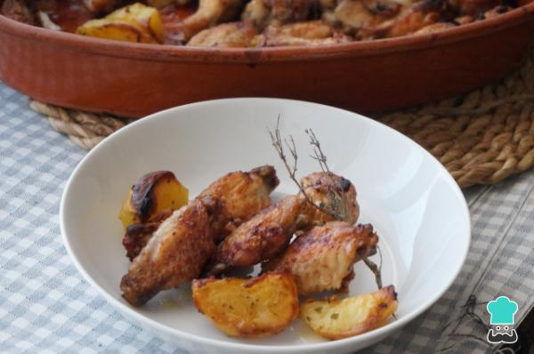

ALITAS DE POLLO

Vamos a preparar unas alitas de pollo al horno con patatas,
una delicia de plato muy sencilla y económica. Las alitas de
pollo son un manjar, gustan a todos porque tienen mucho sabor
y suelen ser económicas en la mayoría de países. En general,
se cocinan fritas, sin embargo, de esta forma se aumenta
considerablemente el número de calorías y, por ello, recomendamos cocinarlas al horno.
Ingredientes
- 1 kilogramo de alitas de pollo
- 4 patatas
- 1 rama de tomillo o romero
- 3 dientes de ajos
- 1 puñado de perejil picado
- 200 mililitros de vino blanco
- 1 chorro de aceite de oliva
- 1 pizca de pimienta
- 1 pizca de sal
- Para hacer las alitas de pollo al horno con patatas, calienta el horno a 180 ºC con calor arriba y abajo. Limpia las alitas cortando un poco la piel de los lados y las plumas. Añadimos sal y pimienta.
- Pon las alitas en una bandeja para horno, pela las patatas y córtalas en 4 trozos de manera que no queden ni muy gruesas ni muy delgadas, así se cocinarán a la vez que la carne. Aliña las patatas con sal y pimienta, coloca unas hojas de romero o tomillo repartidas por la bandeja y vierte un buen chorro de aceite de oliva. Cocina las alitas de pollo con patatas al horno durante 25 minutos.
- Machaca 3-4 dientes de ajo con un poco de perejil y sal en un mortero. Añade el vino y mezcla.
- Pasados los 25 minutos, saca las alitas de pollo, dales la vuelta y rocía todo el aliño de ajo, perejil y vino por toda la bandeja. Vuelve a meter la bandeja en el horno y déjala hasta que se doren las alitas.
- Cuando veas que están doradas a tu gusto, saca la bandeja del horno y sirve los platos inmediatamente. Verás que con esta receta de alitas de pollo con patatas al horno te quedarán crujientes por fuera y muy jugosas por dentro. Recuerda que puedes modificar el aliño a tu gusto, de manera que en lugar de vino puedes usar cerveza, por ejemplo. Para este caso, te recomendamos esta otra Receta de alitas de pollo a la cerveza.
Regresar